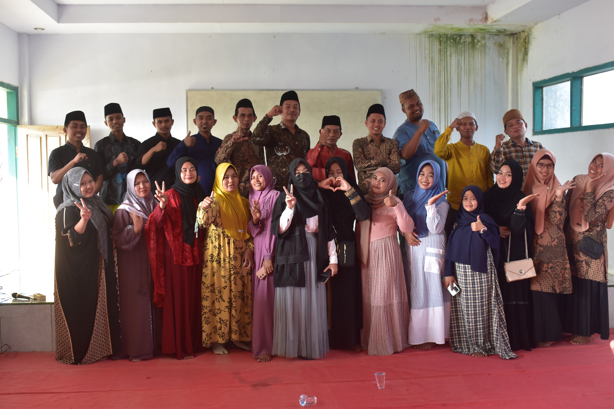
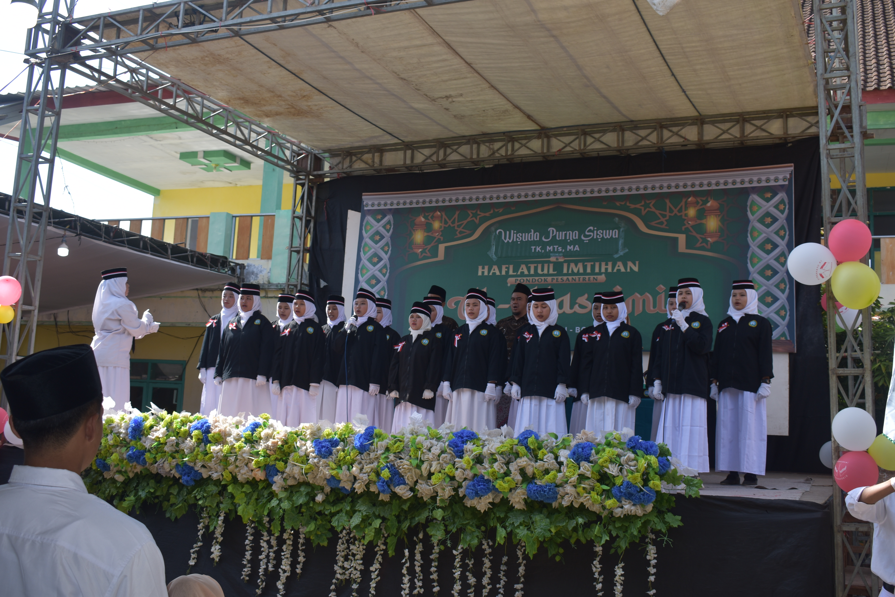
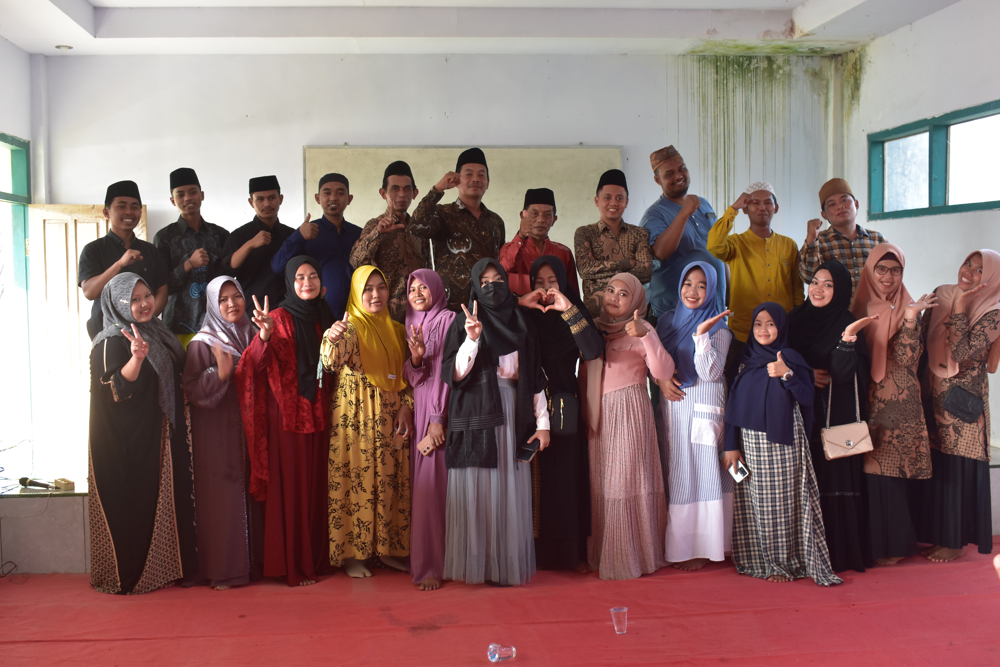
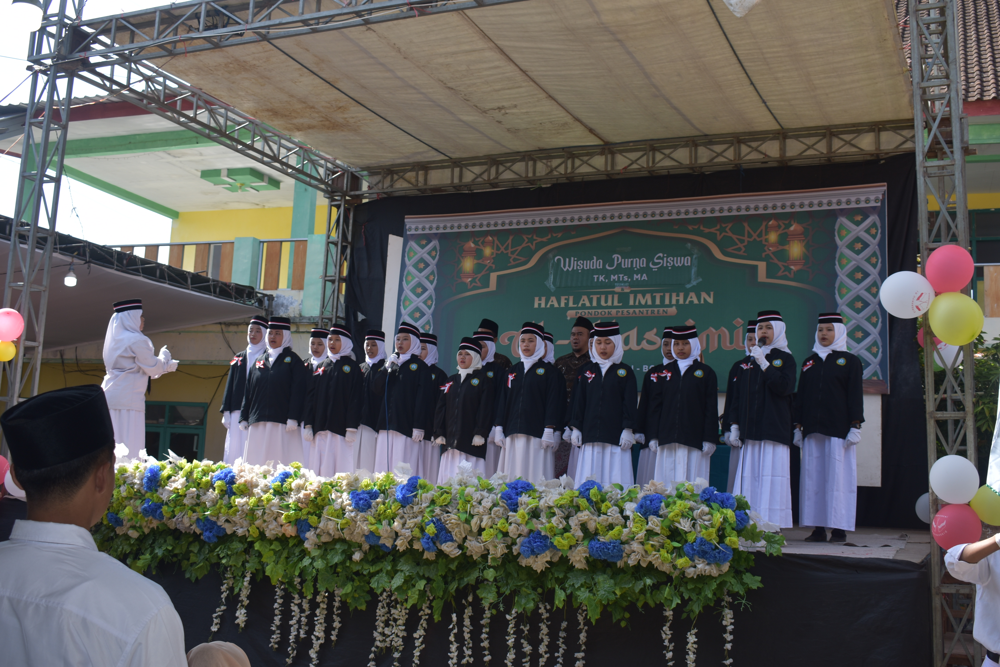
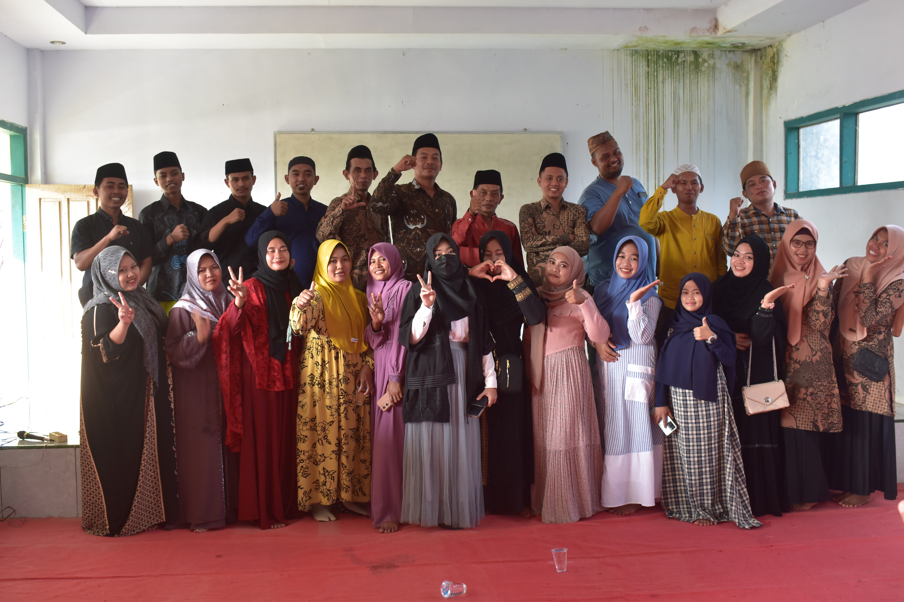
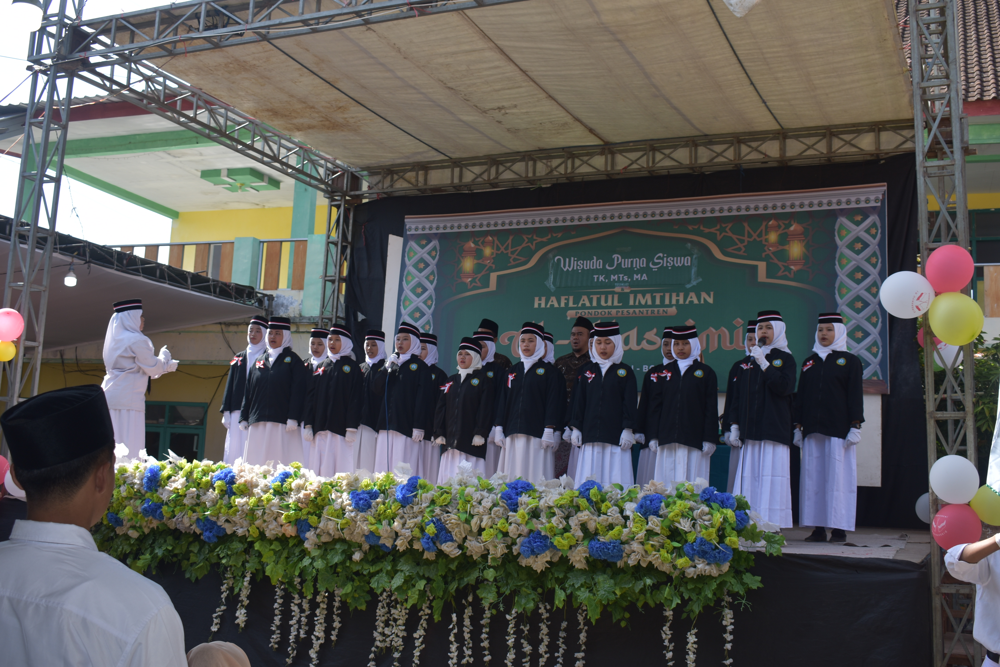

GALERI
 




Pendidikan terpadu 24 jam yang menggabungkan kurikulum umum dan diniyah, pembinaan karakter, serta pembiasaan ibadah harian untuk menyiapkan pemimpin masa depan yang berakhlak mulia.


Satu pintu layanan administrasi seperti surat keterangan, legalisasi dokumen, konfirmasi pembayaran, dan berbagai informasi resmi lainnya.
Dokumentasi kegiatan santri, pengabdian masyarakat, perlombaan, dan kajian keilmuan yang diselenggarakan pondok.
Santri melakukan pembinaan TPA, pengajian warga, dan edukasi literasi Al-Qur'an bersama masyarakat sekitar...
Berbagai cabang lomba digelar, mulai dari futsal, kaligrafi, pidato tiga bahasa, hingga nasyid dan hadrah...
Santri berhasil membawa pulang medali dalam ajang olimpiade sains, dan presentasi hasil riset di hadapan dewan juri...
Silakan hubungi kami untuk informasi pendaftaran, kunjungan, atau kerja sama pendidikan dengan pesantren.